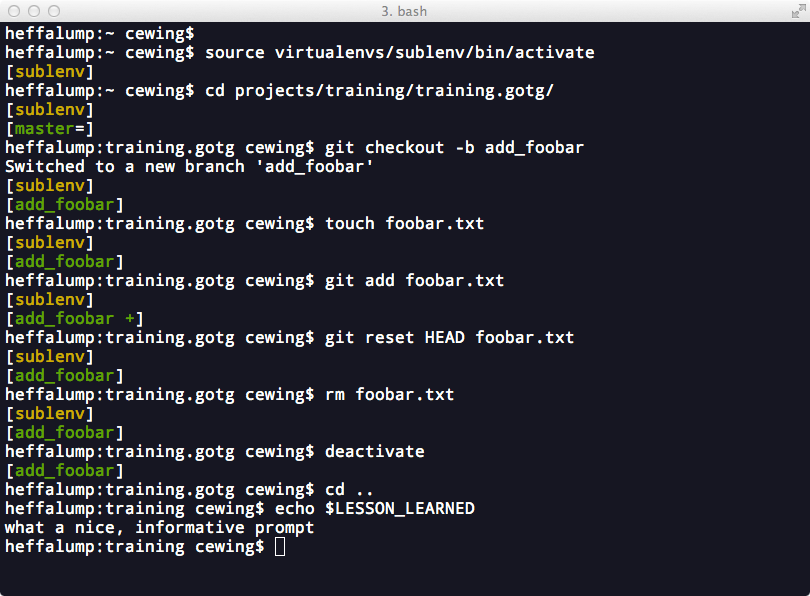

Shell Customizations for Python Development¶
The command line is your home as a developer. You must be comfortable there. In order to improve your comfort there are a number of enhancements you can make to improve your experience, especially with non-standard software like git and virtualenv
What was that name, again?¶
For example, bash offers tab completion. But that doesn’t extend to interactions with git. Considering how many branches, tags and remotes you end up interacting with, and how many long-winded commands there are in git, having a similar autocompletion for them would be very nice.
The folks who create such things have been kind enough to provide a shell script that sets this up. And it’s not hard to install.
The script is called git-completion and it’s available in bash, tcsh and zsh flavors.
To use it, download the version of the script that corresponds to your preferred shell from the tag of the git repo that corresponds to the version of git you are using. I’ve got git 1.8.4.2 installed on my machine, so this is the version for me. Put it in your home directory:
$ cd
$ curl https://raw.github.com/git/git/v1.8.4.2/contrib/completion/git-completion.bash -o .git-completion.bash
Then source it from your shell startup file:
source ~/.git-completion.bash
There’s even a nifty gist that does this automatically for OS X.
Once installed, you should be able to visit any repository you have on your machine and get tab completion of branch names, remotes and all git commands.
Where am I, what am I doing?¶
As a working developer, you end up with a lot of projects. Even with tab completion its a chore to remember which branch is checked out, how far ahead or behind the remote you are, and so on.
Enter git-prompt. Again, you place this code in your home directory, and then source it from your shell startup file:
source ~/.git-prompt.sh
Once you do this you can use the __git_ps1 shell command and a number of shell variables to configure PS1 and change your shell prompt. You can show the name of the current branch of a repository when you are in one. You can get information about the status of HEAD, modified files, stashes, untracked files and more.
There’s two ways to do this. The first is to use __git_ps1 as a command directly in a PS1 expression in your shell startup file:
export PS1='[\u@\h \W$(__git_ps1 " (%s)")]\$ '
The result looks like this:

That’s not bad, but a bit of color would be nice, and perhaps breaking things onto more than one line so you can parse what you’re seeing more easily would be helpful.
For that, you’ll need to change strategies. The __git_ps1 command can be used as a single element in the expression for PS1. But it can also be used itself as the PROMPT_COMMAND env variable (this command is for bash, there’s different one for zsh). If defined, this command will be used to form PS1 dynamically.
When you use __git_ps1 in this way, a couple of things happen. First, instead of taking only one optional argument (a format string), you can provide two or optionally three arguments:
- The first will be prepended to the output of the command
- The second will be appended after
- The optional third argumment will be used as a format string for the output of the command itself. If there is no output, it will not appear at all.
Combining these three elements can be very expressive. For example, A standard OS X command prompt can be expressed like so: \h:\W \u\\\$ ``. If you use this expression as the second argument, leave the first empty and provide a simple format ending in a newline for the ``__git_ps1 output, you get some nice results.
Enter this in your shell startup file:
PROMPT_COMMAND='__git_ps1 "" "\h:\W \u\\\$ " "[%s]\n"'
That produces a nice two-line prompt that appears when you’re in a git repo, and disappears when you’re not:

You can also play with setting a few environment variables in your shell startup file to expand this further. For example, colorizing the output and providing information about the state of a repo:
GIT_PS1_SHOWDIRTYSTATE=1
GIT_PS1_SHOWCOLORHINTS=1
GIT_PS1_SHOWSTASHSTATE=1
GIT_PS1_SHOWUPSTREAM="auto"
PROMPT_COMMAND='__git_ps1 "" "\h:\W \u\\\$ " "[%s]\n"'
{kind=link}
Not half bad at all.
But wait, there’s more.¶
The problem with this is that it doesn’t play well with another incredibly useful tool, virtualenv. When you activate a virtualenv, it prepends the name of the environment you are working on to the shell prompt.
But it uses the standard PS1 shell variable to do this. Since you’ve now used the PROMPT_COMMAND to create your prompt, PS1 is ignored, and this nice feature of virtualenv is lost.
Luckily, there is a way out. Bash shell scripting offers parameter expansion and a trick of the that syntax can help. Normally, a shell parameter is referenced like so:
$ PARAM='foobar'
$ echo $PARAM
foobar
In complicated situations, you can wrap the name of the paramter in curly braces to avoid confusion with following characters:
$ echo ${PARAM}andthennotparam
foobarandthennotparam
What is not as well known is that this curly-brace syntax has a lot of interesting variations. For example, you can use PARAM as a test and actually print something else entirely:
$ echo ${PARAM:+'foo'}
foo
$ echo ${PARAM:+'bar'}
$
The key here is the :<char> bit immediately after PARAM. If the + char is present, then if PARAM is unset or null, what comes after is not printed, otherwise it is.
If you look at the script that activates a virtualenv in bash you’ll notice that it exports VIRTUAL_ENV. This means that so long as a virtualenv is active, this environmental variable will be set. And it will be unset when no environment is active.
You can use that!
Armed with this knowledge, you can construct a shell expression that will either print the name of the active virtualenv in square brackets, or print nothing if no virtualenv was active:
$ echo ${VIRTUAL_ENV:+[`basename $VIRTUAL_ENV`]}
$ source /path/to/someenv/bin/activate
$ echo ${VIRTUAL_ENV:+[`basename $VIRTUAL_ENV`]}
someenv
Roll that into your shell startup file. You’ll have everything you want. You can even throw in a little more color for good measure:
source ~/.git-prompt.sh
# PS1='[\u@\h \W$(__git_ps1 " (%s)")]\$ '
GIT_PS1_SHOWDIRTYSTATE=1
GIT_PS1_SHOWCOLORHINTS=1
GIT_PS1_SHOWSTASHSTATE=1
GIT_PS1_SHOWUPSTREAM="auto"
Color_Off="\[\033[0m\]"
Yellow="\[\033[0;33m\]"
PROMPT_COMMAND='__git_ps1 "${VIRTUAL_ENV:+[$Yellow`basename $VIRTUAL_ENV`$Color_Off]\n}" "\h:\W \u\\\$ " "[%s]\n"'
And voilà! You’ve got a shell prompt that informs about all the things you’ll need to know when working on a daily basis:
{kind=link}
Wrap-Up¶
There is still a great deal more that you could do with your shell, but this will suffice for now. If you are interested in reading further, there is a lot to learn.